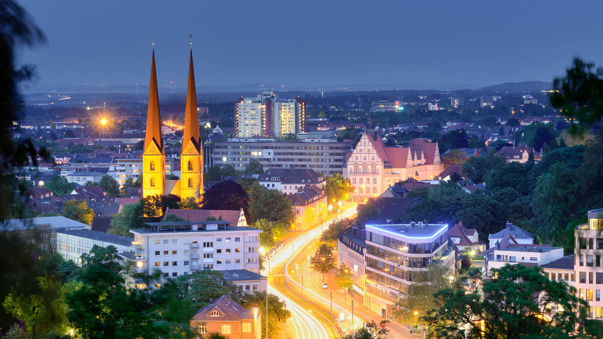
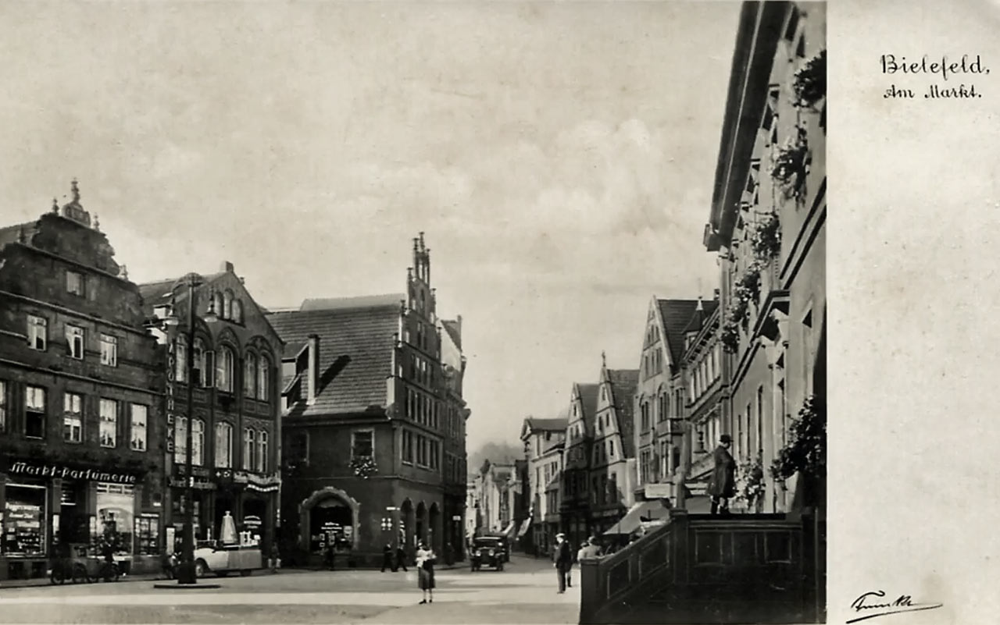

Bielefeld is a city in the Ostwestfalen-Lippe Region, in the north-east of North Rhine-Westphalia, Germany. With a population of 341,755, it is also the most populous city in the administrative region (Regierungsbezirk) of Detmold and the 18th largest city in Germany.
The historical centre of the city is situated north of the Teutoburg Forest line of hills, but modern Bielefeld also incorporates boroughs on the opposite side and on the hills. The city is situated on the Hermannsweg, a hiking trail which runs for 156 km along the length of the Teutoburg Forest.
View on the city
Founded in 1214 by Count Hermann IV of Ravensberg to guard a pass crossing the Teutoburg Forest, Bielefeld was the "city of linen" as a minor member of the Hanseatic League, known for bleachfields into the 19th Century. Bielefeld was part of the Kingdom of Westphalia when it was created in 1807. In 1815 it was incorporated into the Kingdom of Prussia following the defeat of France and the Congress of Vienna.
Between 1904 and 1930, Bielefeld grew, opening a rebuilt railway station, a municipal theatre, and finally, the Rudolf-Oetker-Halle concert hall, renowned for its excellent acoustics. The Dürkopp car was produced 1898–1927. After printing emergency money (German: Notgeld) in 1923 during the inflation in the Weimar Republic, Bielefeld was one of several towns that printed very attractive and highly collectable banknotes with designs on silk, linen and velvet. These pieces were issued by the Bielefeld Stadtsparkasse (town's savings bank) and were sent all around the world in the early 1920s. These pieces are known as Stoffgeld – that is, money made from fabric.
Bielefeld 100 years ago
Bielefeld is subdivided into the following ten (10) districts: